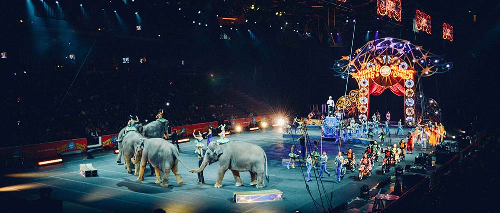
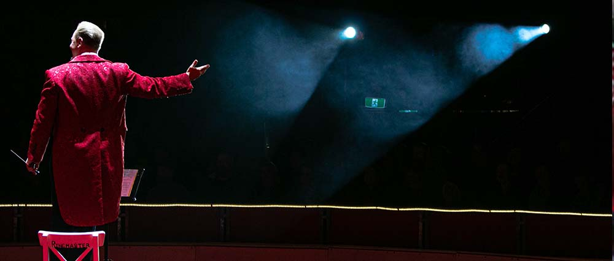

Events
With its uplifting and positive message, this is a t-shirt that perfectly sums up the ADI ethos – that everything is possible when it comes to helping animals. ADI exposes and prevents the suffering of animals in entertainment, research and other industries through our start-to-finish approach which includes evidence from investigations, scientific and legal research and reports, awareness and legislative campaigns, and where possible, rescue of animals.
Upcoming events
A benefit for the ADI Wildlife Sanctuary featuring the award-winning film Lion Ark and real-life rescue stories with ADI founders Jan Creamer and Tim Phillips, and Sonoma veterinarian Dr. Howard Rosner. More action adventure than traditional documentary.
Stop Circus Suffering
Have an information booth in your town center. ADI can provide you with materials and loan you (free) a “Stop Circus Suffering” banner for the table. Take part in a demo. ADI can help organize this with you. We can put you in touch with other supporters in your area and provide you with all the materials you will need. Write a Letter to the Editor of your local newspaper. Start a public dialogue in your community by writing a letter to your local newspaper editor about animal abuse in US circuses. Contact ADI for materials which you can use to help formulate your letter.
No Fun for Elephants
Bob Barker introduces the video, "To many, it looks like harmless fun, but elephants pay a heavy price for the few minutes of entertainment they provide when performing in circus shows, giving rides, or making appearances at parades, weddings or other events. Most of us marvel at the majesty of wild animals and I can understand why people want to see animals like elephants up close. But isn´t it especially tragic when animals are suffering and being abused simply to entertain us?"
Lion Ark
Lion Ark is a vivid behind the scenes account of probably the most ambitious animal rescue ever undertaken, the finale of which sees 25 lions rescued from illegal traveling circuses across Bolivia being flown to safety in the USA. A shocking undercover investigation leads to a ban on animal circuses in Bolivia. But the circuses defy the law. The team behind the investigation return, track down the illegal circuses and save every animal. We follow the confrontations, heartache and risks the team face, before an emotional finale sees 25 lions airlifted 5,000 miles to freedom in Colorado.
Home for the Holidays Party!
On December 8, just two weeks after relocating the first three tigers from Guatemala, ADI co-founders Jan Creamer (pictured above) and Tim Phillips shared updates, videos, and the inside story from the rescue mission in Guatemala and from the ADI Wildlife Sanctuary in South Africa to an intimate audience at El Cid restaurant in Los Angeles. In addition to film shows, the relaxed and fun event included vegan hors d´oeuvres, special animal-themed cocktails, holiday gifts for sale, and an auction of art work featuring some of ADI’s rescued animals. Proceeds from the event helped fund the huge airlift of the remaining 17 lions and tigers from Guatemala to South Africa.
Sacred Stories of Animals
On October 12, in Hollywood, ADI founders Jan Creamer and Tim Phillips gave an illustrated talk about the emotions, compassion, altruism, and intelligence of animals they have witnessed during ADI´s work. They joined a diverse panel at a special event, `Sacred Stories of Animals, Faith and Compassion,´ hosted by The Guibord Center and the Vedanta Society of Southern California.
TEAPSPA launch
On Tuesday, May 21, ADI was in Washington, DC, with Representatives Raúl Grijalva (D-AZ) and David Schweikert (R-AZ) to reintroduce the Traveling Exotic Animal and Public Safety Protection Act (TEAPSPA; HR2863). The bill seeks to amend the Animal Welfare Act to prohibit the use of exotic and wild animals in traveling performances.
Worldwide Vegan Bake Sale
A huge THANK YOU to everyone taking part in the recent Worldwide Vegan Bake Sale, raising funds for our beautiful new ADI Wildlife Sanctuary in South Africa. All money raised from bake sales and donations from the sale of baked goodies by supporting businesses Whole Flowers Farm, Lotties Bakery, Ms Cupcake, The Green Kitchen and The Free From Bakery, will be doubled through our current matched giving
ADI Garden Party in Los Angeles
ADI’s summer Garden Party on July 22, 2018 was a huge success, with guests enjoying delicious vegan wines and food in good company. For the second year running, the event was hosted by ADI supporters Lo Sprague and Gwynne Guibord in their beautiful Hancock Park garden. ADI founders Jan and Tim updated guests on Operation Liberty in Guatemala and the building of a new ADI Wildlife Sanctuary in South Africa, and bidding on a unique auction featuring one of ADI´s famous green watering cans - `enjoyed´ by Kimba, one of five ex-circus rescued by ADI in Guatemala - fetched a whopping $5,000!